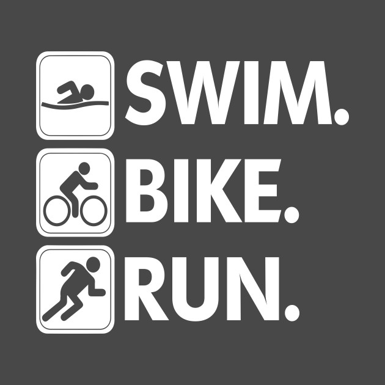

Spletna aplikacija Sledilec aktivnosti je namenjena vsem amaterskim in "wanna be" profesionalim športnikom, ki se ukvarjajo s plavanjem,
kolesarjenjem in/ali tekom. Zato je lahko odličen pripomoček za spremljanje in beleženje treningov tudi za triatlonce, in seveda
ugotavljanje napredovanja v posamezni disciplini posebej.
Po vsakem treningu je potrebno le vnesti čas treninga in opravljeno razdaljo ter aktivnost. Vsi treningni so hitro dostopni, prav tako
pa je mogoče tudi iskanje po mesecih, tekmah in disciplini. Na koncu vsakega meseca je tudi izračunana skupna opralvjena razdalja v
posamezni disciplini in število opravljenih aktivnosti.
